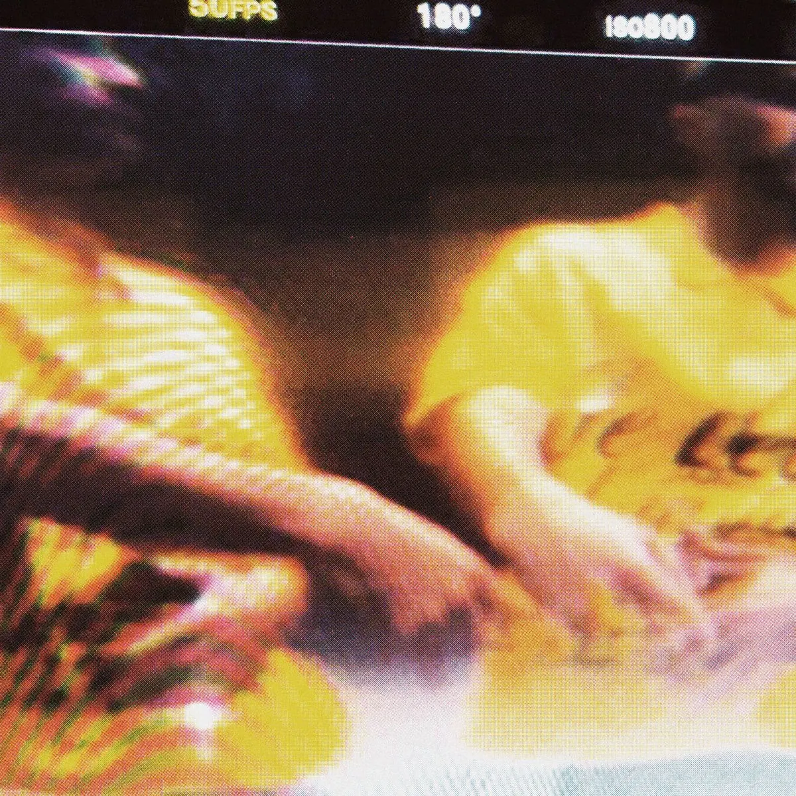

Publié le 16 novembre 2026

Le rappeur H JeuneCrack a sorti le single Dope musique le 10 novembre 2026. Ce morceau précède son projet 3ème Mouvement paru le 13 novembre sur le label Opale Système.
Le morceau arrive quelques semaines après la sortie de sa collaboration Session Shooting avec Johnny Ola et Jungle Jack. L'artiste toulousain confirme une écriture incisive et un contrôle total sur sa direction sonore.
Pourquoi Dope musique marque-t-il l'arrivée de l'album ?
Le single Dope musique pose l'ambiance esthétique du projet avec un rythme sec et une écriture sans artifice. H JeuneCrack orchestre la production aux côtés des beatmakers esone et thirdeye. Les arrangements minimalistes laissent une place centrale à son débit régulier et à ses rimes au millimètre.
Le visuel accompagne cette esthétique sobre. Réalisé par Etienne Saby et produit par le studio Partizan, le clip officiel est disponible sur la chaîne YouTube de H JeuneCrack. La vidéo privilégie des plans bruts et une mise en scène ancrée dans la réalité du studio.
Cette sortie concrétise la démarche annoncée lors de l'annonce de son projet 3ème Mouvement. Le rappeur choisit un format court de 2 minutes 16 pour marquer les esprits. Ce choix témoigne d'une volonté d'efficacité immédiate auprès de son public.
Comment ce titre conclut-il la trilogie des Mouvements ?
Avec ce projet, l'artiste met un point final à la trilogie entamée avec 1er Mouvement puis 2ème Mouvement. Le single Dope musique synthétise la méthode de travail de H JeuneCrack. Il conserve le contrôle complet sur la composition, l'enregistrement et la distribution via sa propre structure Opale Système.
Le morceau se distingue par des paroles descriptives et un ton distancié. Le refrain répète une formule simple et entêtante qui donne son nom au morceau. L'artiste évite les effets de manche pour se concentrer sur des images quotidiennes et une diction précise.
Le format de 8 titres retenu pour l'album complet maintient une tension constante. Dope musique agit comme une porte d'entrée efficace. Le titre équilibre l'exigence technique du rap underground avec une forme accessible aux auditeurs fidèles comme aux curieux.
Quelles sont les caractéristiques de la sortie ?
Les éléments techniques du single et du projet associé sont détaillés ci-dessous :
| Élément | Détail |
|---|---|
| Titre du single | Dope musique |
| Date de sortie du single | 10 novembre 2026 |
| Producteurs | esone, H JeuneCrack, thirdeye |
| Réalisateur du clip | Etienne Saby (Partizan) |
| Projet associé | 3ème Mouvement (8 titres) |
| Date du projet | 13 novembre 2026 |
| Label | Opale Système |
Les supports physiques du projet comprenant vinyles et vêtements sont distribués sur le site officiel de l'artiste. H JeuneCrack poursuit son parcours indépendant en assurant lui-même le lien avec sa communauté.